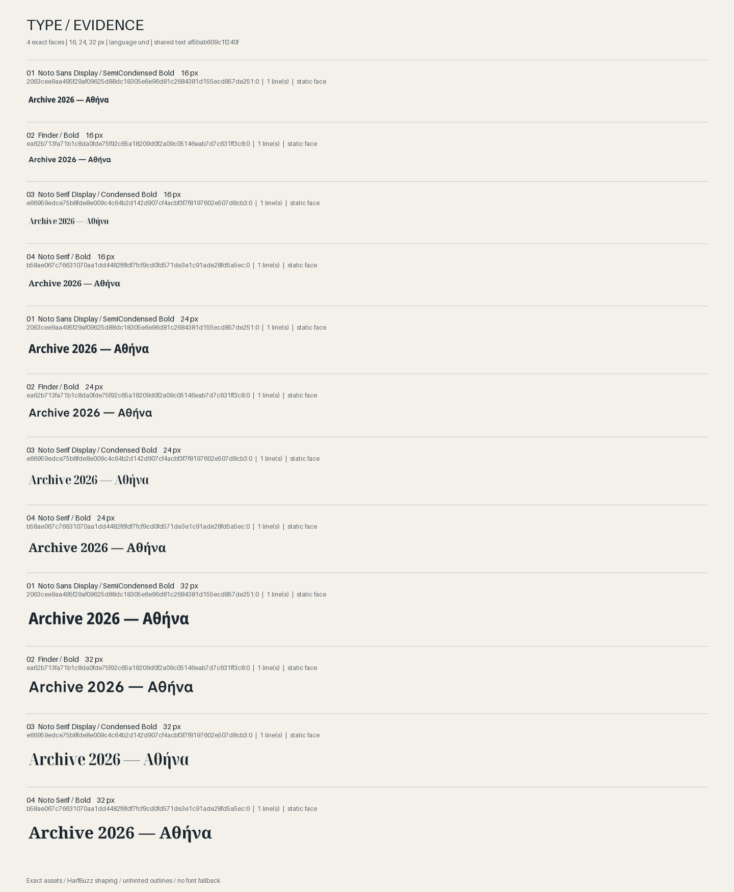
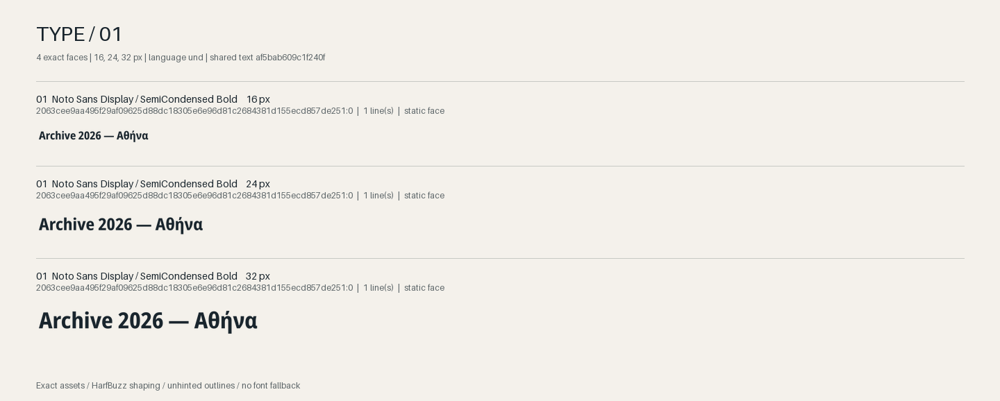
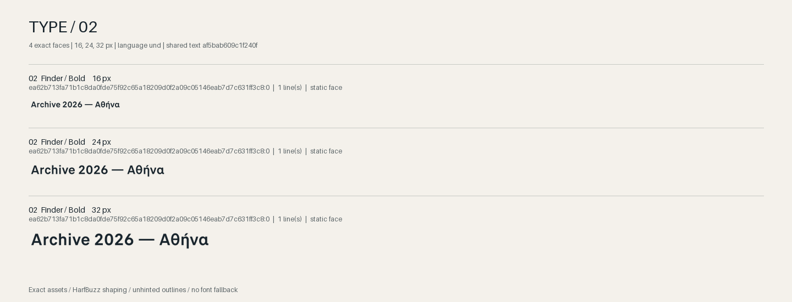
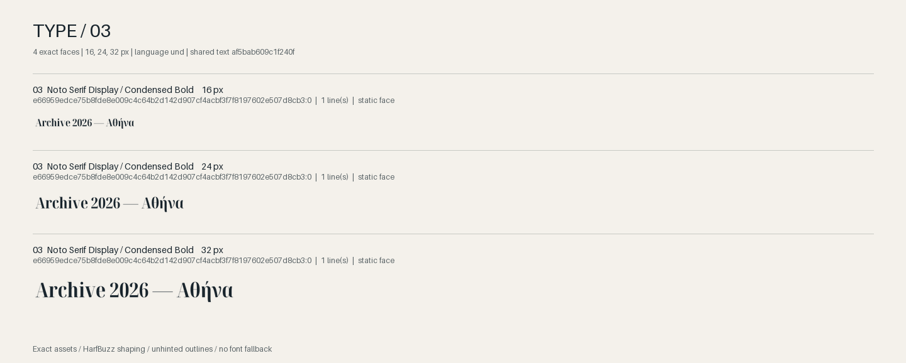
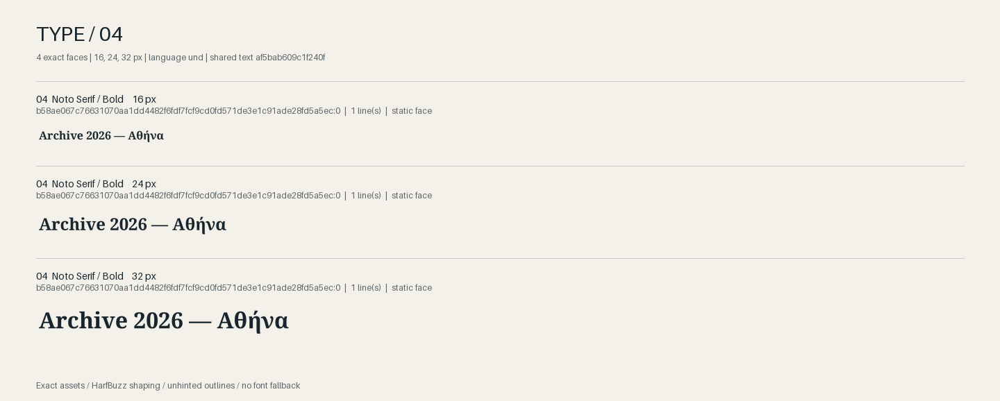

Choose with the actual type.
4 exact font faces. Your text, shared sizes, explicit settings. The specimens below are PNGs rendered from verified source bytes. The page interface uses your system font; it is separate from the specimens.
Specimens use unhinted monochrome outlines; they do not predict browser, game engine, printer, or OS text rasterization. Browser scaling can soften previews: open the PNG at 100% to inspect small text. Measurements describe this renderer; they are not subjective design judgments. Source rights remain subject to review.

Archive 2026 — Αθήνα
SHA-256: af5bab609c1f240f7e50ecb0c522ada54084e26a22bd11107a4899905ee0eab3
Noto Sans Display SemiCondensed Bold
2063cee9aa495f29af09625d88dc18305e6e96d81c2684381d155ecd857de251:0
- Source SHA-256
- 2063cee9aa495f29af09625d88dc18305e6e96d81c2684381d155ecd857de251
- Face / sizes
- 0 / 16, 24, 32 px
- Variation axes
- {}
- Rights evidence
- embedded-open-license; review required
- Source provenance
- {"commit": "7841ca896a9a770d5ea18fd5faef0eb91ad90ef3", "container": "ttf", "path": "Foundries/Google/Noto/Sans-Display-Unhinted/NotoSansDisplay-SemiCondensedBold.ttf", "source_id": "bekah", "upstream_path": "Foundries/Google/Noto/Sans-Display-Unhinted/NotoSansDisplay-SemiCondensedBold.ttf", "url": "https://github.com/bekahmcdonald/fonts"}

Finder Bold
ea62b713fa71b1c8da0fde75f92c65a18209d0f2a09c05146eab7d7c631ff3c8:0
- Source SHA-256
- ea62b713fa71b1c8da0fde75f92c65a18209d0f2a09c05146eab7d7c631ff3c8
- Face / sizes
- 0 / 16, 24, 32 px
- Variation axes
- {}
- Rights evidence
- unknown; review required
- Source provenance
- {"commit": "7841ca896a9a770d5ea18fd5faef0eb91ad90ef3", "container": "ttf", "path": "Foundries/Black [Foundry]/Finder/Finder-Bold.ttf", "source_id": "bekah", "upstream_path": "Foundries/Black [Foundry]/Finder/Finder-Bold.ttf", "url": "https://github.com/bekahmcdonald/fonts"}

Noto Serif Display Condensed Bold
e66959edce75b8fde8e009c4c64b2d142d907cf4acbf3f7f8197602e507d8cb3:0
- Source SHA-256
- e66959edce75b8fde8e009c4c64b2d142d907cf4acbf3f7f8197602e507d8cb3
- Face / sizes
- 0 / 16, 24, 32 px
- Variation axes
- {}
- Rights evidence
- embedded-open-license; review required
- Source provenance
- {"commit": "7841ca896a9a770d5ea18fd5faef0eb91ad90ef3", "container": "ttf", "path": "Foundries/Google/Noto/Serif-Display-Unhinted/NotoSerifDisplay-CondensedBold.ttf", "source_id": "bekah", "upstream_path": "Foundries/Google/Noto/Serif-Display-Unhinted/NotoSerifDisplay-CondensedBold.ttf", "url": "https://github.com/bekahmcdonald/fonts"}

Noto Serif Bold
b58ae067c76631070aa1dd4482f6fdf7fcf9cd0fd571de3e1c91ade28fd5a5ec:0
- Source SHA-256
- b58ae067c76631070aa1dd4482f6fdf7fcf9cd0fd571de3e1c91ade28fd5a5ec
- Face / sizes
- 0 / 16, 24, 32 px
- Variation axes
- {}
- Rights evidence
- embedded-open-license; review required
- Source provenance
- {"commit": "7841ca896a9a770d5ea18fd5faef0eb91ad90ef3", "container": "ttf", "path": "Foundries/Google/Noto/Serif-Unhinted/NotoSerif-Bold.ttf", "source_id": "bekah", "upstream_path": "Foundries/Google/Noto/Serif-Unhinted/NotoSerif-Bold.ttf", "url": "https://github.com/bekahmcdonald/fonts"}

How to read this evidence
Specimens use unhinted monochrome outlines; they do not predict browser, game engine, printer, or OS text rasterization. LTR scripts are itemized in source order; Common/Inherited characters follow neighboring script runs. Bidirectional paragraphs, mixed-script RTL lines, vertical writing, Unicode variation selectors, and color/bitmap fonts are rejected. Line wrapping preserves whitespace and does not implement language-specific hyphenation. All ink bounds receive padding; oversized output is rejected instead of clipped. Nonvisual evidence describes measured geometry, coverage, shaping, and settings. It does not claim aesthetic quality, accessibility, or licensing clearance.
Every specimen glyph is shaped by HarfBuzz and drawn by FreeType from its exact verified source face. No system lookup, substitute font, or fallback font is used. Labels and page UI are separate.
Renderer: HarfBuzz 12.1.0; uharfbuzz 0.52.0; Pillow 11.3.0. OpenType overrides: {}; language: und.